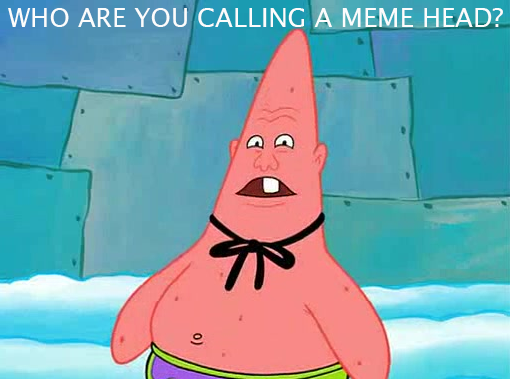
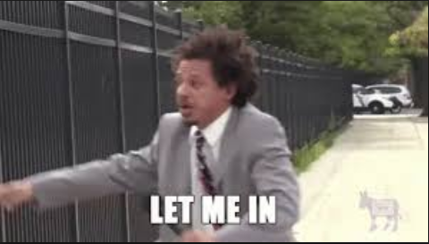

History of Memes

What are Memes?
A meme is a picture such as Thanos with texts that poke a little fun at a cultural society. A wide variety of memes that we see today in the modern age are intended to be funny. Also another variety of memes have already died out like the original meme. It doesn't even make an appearance at all, at least now in the moder age because it is the 21st century now we are looking for something new. Not some old dead meme. Other memes can be videos or even sounds such as the Pepe the frog screaming "reeeeee". Like the pepe the frog meme people forget about it and it dies out. So then more memes will be found repairing the meme population adding to the many other memes out there. #respectdamemes
